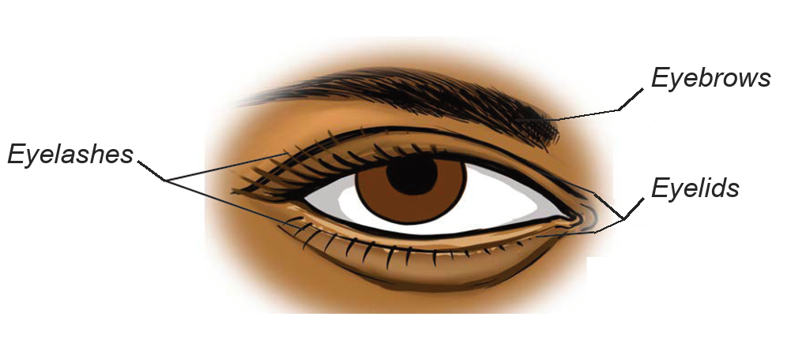
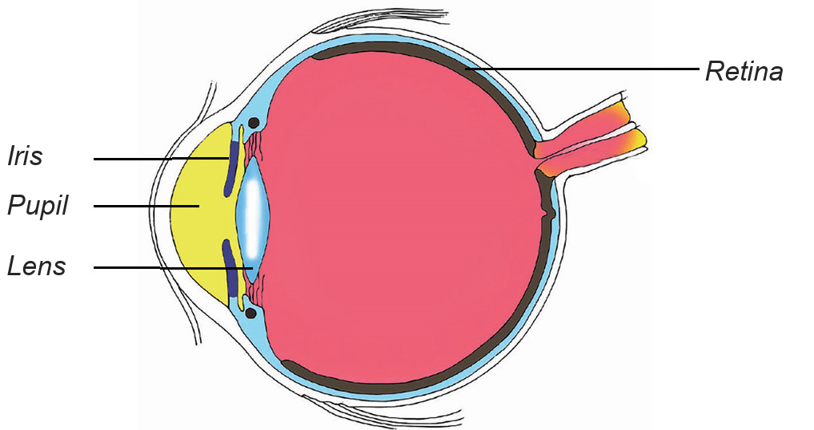

Eyelashes Eyebrows Eyelids
Figure 3: Outer parts of the human eye
The inner part includes the pupil, iris, lens and retina. Figure 4 shows the internal parts of the human eye. An eye is an organ that receives light through the pupil. The amount of light that enters the eye is controlled by the iris. The retina of the eye changes light into signals. The brain interprets the signals into the actual images we see.

Iris Pupil Lens Retina
Figure 4: Internal parts of the human eye